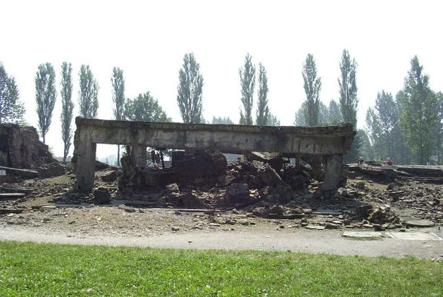
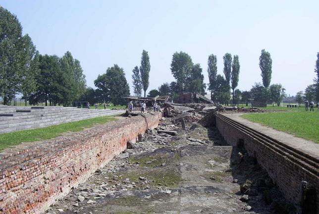

Four gas chambers and crematoria were in use at Birkenau, each with the potential to kill and burn up 6,000 bodies per day. The crematoria (top picture) lie in unrecognizable ruins, having been destroyed by the Nazis upon departure in late 1944 and January 1945. However, the walls of the long gas chambers (bottom picture) are still visible.


Back to Birkenau
Back to the Homepage